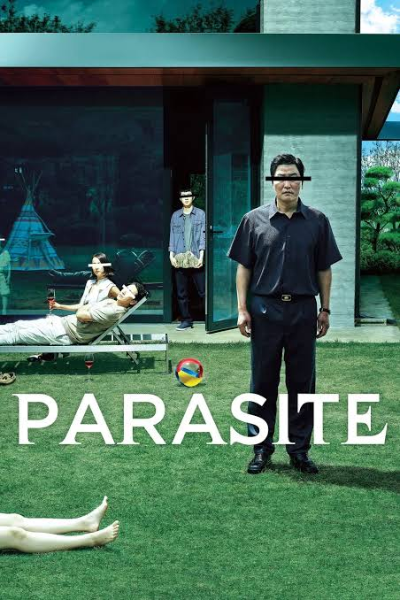
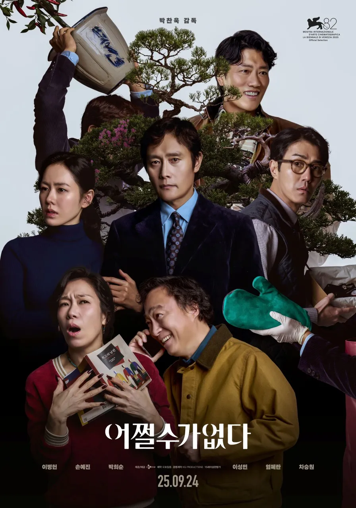
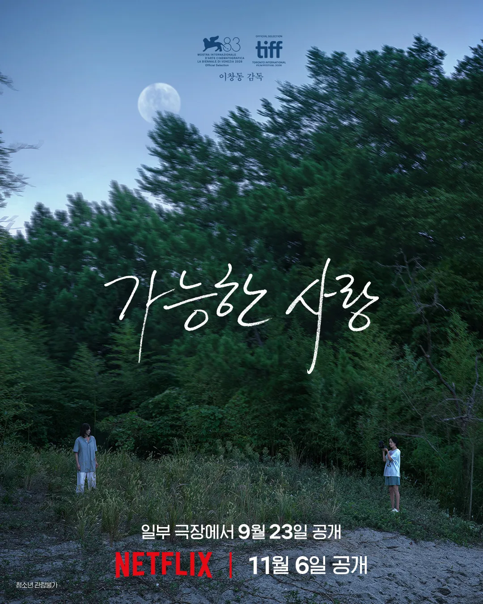

봉준호감독의 기생충 (2019)

박찬욱감독의 어쩔수가 없다 (2025)

이창동감독의 가능한 사랑 (2026)

봉준호감독의 기생충 (2019)

박찬욱감독의 어쩔수가 없다 (2025)

이창동감독의 가능한 사랑 (2026)
불편한 "기생충"
기생충도 불편했는데 더 불편한거임?
알게모르게 쿡쿡 찌르는 장면이 꽤 많음. 유머스러운 장면도 없고
호루라기씬은 속으로 씨발 씨발 거렸다
아일릿나옴?
가능한! 빨간색이! 한 번 따라 해봐요
작품성도 좋지만
대중성 있는 영화 나오면 좀 보러가고 싶다
살목지나 파묘같은거
기생충이랑 어쩔수가 없다는 재밌게봤는데 가능한 사랑도 스릴러였나?
나는 이거 뭐 멜로인줄 알고 걸렀는데
스릴러 아님 멜로도 아니고
그리고 난 아직도 왜 이게 "가능한 사랑" 이 주제인지 이해가 안간다 나중에 다시한번 봐야지
흠..
내가 사랑 할 수 있는 사람의 범위가 주제라고 보면 편함. 두 가족은 사랑할수 없는 존재? 그렇게 이해해도 됨. 다른 해석도 가능하지만
기생충이 젤 좋았고 그다음은 가능한 사랑 어쩔수가 없다는 솔직히 별로엿음
가능한 사랑도 약간.. 좀 별로였음 이창동 감독 전작품들 생각하면
어쩔 수가 없다 극장 가서 보고 비평했다가 대차게 까였다
극장 가서 볼 체급도 안 되고
거장임을 과시하기 위해서 만들어진 영화
어쩔수 없다 존나게 재밌었는데.. 블랙유머 안 좋아하면 별롤지도. 파고, 인 브루쥬 등 좋아하면 미치는 영화임
어쩔없이 저기 낄 레벨인가 솔직히?
바이럴 잘하네 너 재능있다
호프 어디감?
호프는 인랑, 외계+인, 군함도와 어깨를 나란히 하는 4대 명작이잖아.
난 한국 영화 탑3
기생충
헤어질 결심
올드보이
헤결 나는 엔딩이 좀 난해하던데
트릴로지 뜻을 모르는듯
중요한건 누가 만들었는지 어떤 주제인지가 아니라 배트맨 비긴즈-다크나이트-다크나이트 라이즈/반지원정대-두개의 탑-왕의 귀환/대부123 처럼 연속성을 가진 3부작 시리즈에만 붙는거임.
흔히 박찬욱 복수 트릴로지라고 하는것도 연속성은 없지 않음?
평론가들이 묶은거임 박찬욱 본인은 복수트롤로지 의도한바 없다함
그렇담 이 글도 그런거지
김종민때문에 '가능한' 이 다르게 읽어진다..
가능한!
뭔 소리야?
어쩔 수가 없다를 기생충에 비빈다고?
내 한국영화탑은
올드보이
기생충
봄여름가을겨울그리고 봄
찬욱이는 나가있어
트릴로지(Trilogy, 삼부작)는 세 개의 작품으로 이루어진 하나의 연작이나 시리즈를 뜻합니다.
연작을 같은 작가의 같은 주제를 근저에 담은 것으로 한정하지 말라. 첫글 쓴이는 의미를 오해했을 수 있으나 애초 이 세상에는 생각하기에 따라 모두 짙게 얽히고 연계되어 있으니 따로 떨어진 것은 존재할 수 없어라
옘병하네
나온지 2일 됐는데 이렇게 묶임?
그리고 왜 트릴로지임?
다들 연배 드시면서 연출은 잘하시지만 내용이 날카롭지 못해서 아쉬워
영화
어쩔 개노잼이던데
박찬욱 영화는 아가씨 빼곤 다 소화하기 싫더라..
기생충 정도가 딱 좋았지 이제 저 주제도 지긋지긋하다
버닝도 묘한 기분나쁜 찝찝함이 있었는데 여긴 없넹
가능한사랑 영화관에서 봤는데 좋았음
흥미롭게 봄
가~능한(김종민톤으로)
가능한 사랑이 그정도야?